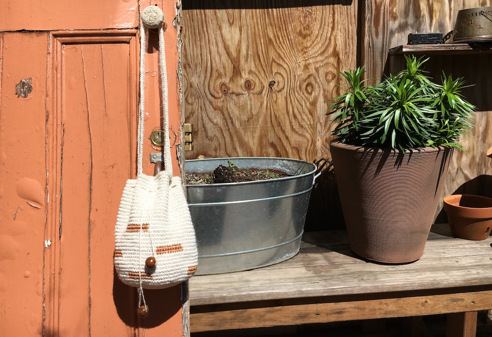
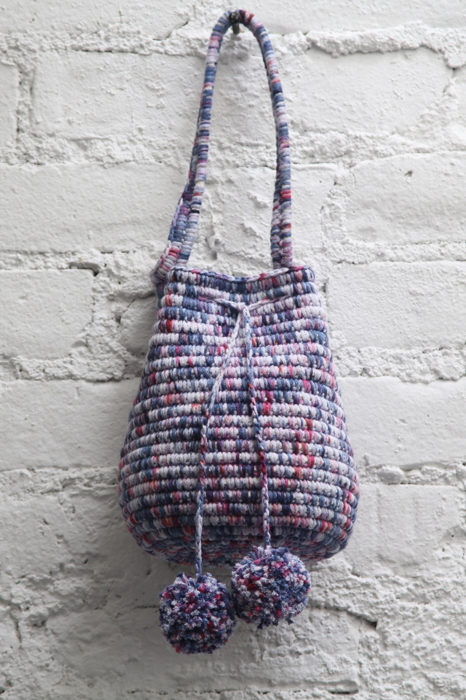
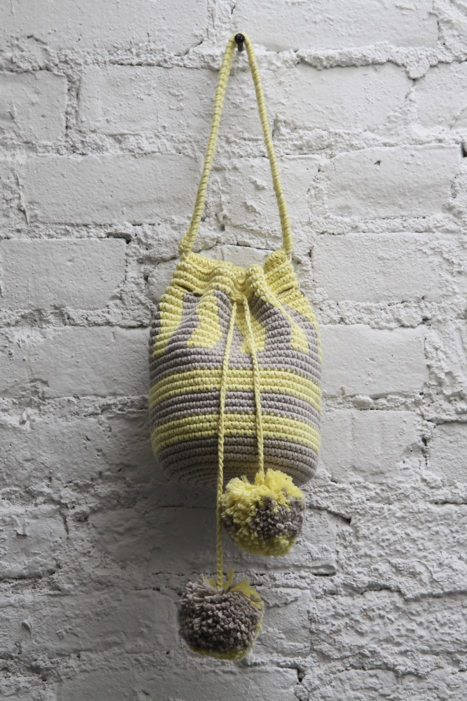
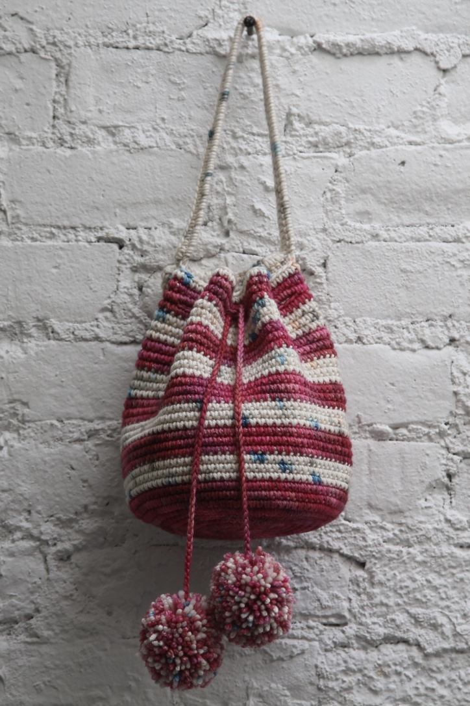
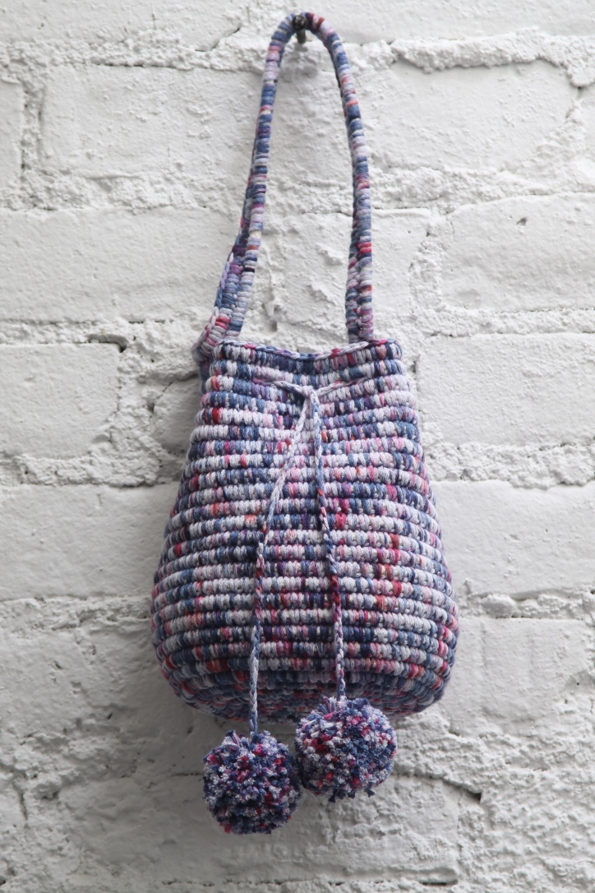
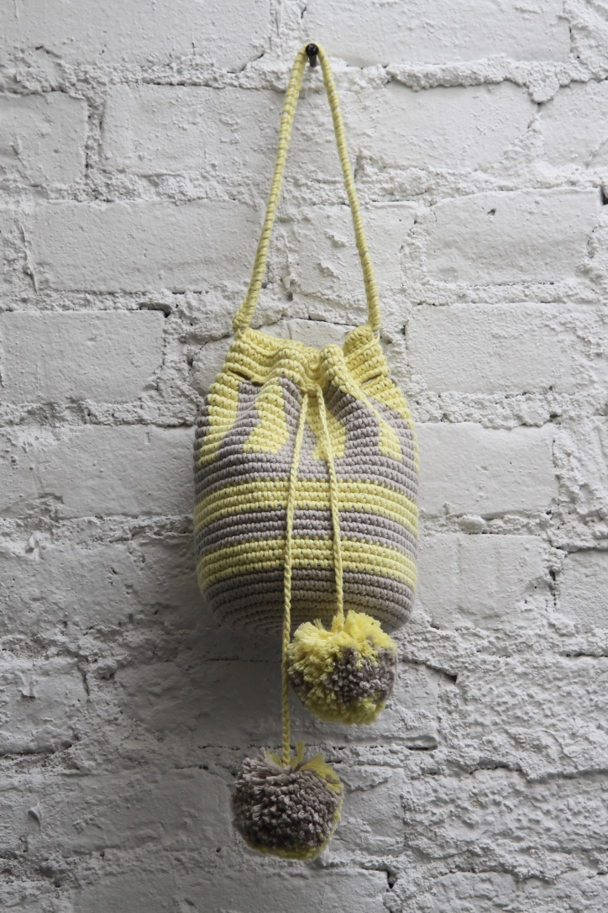
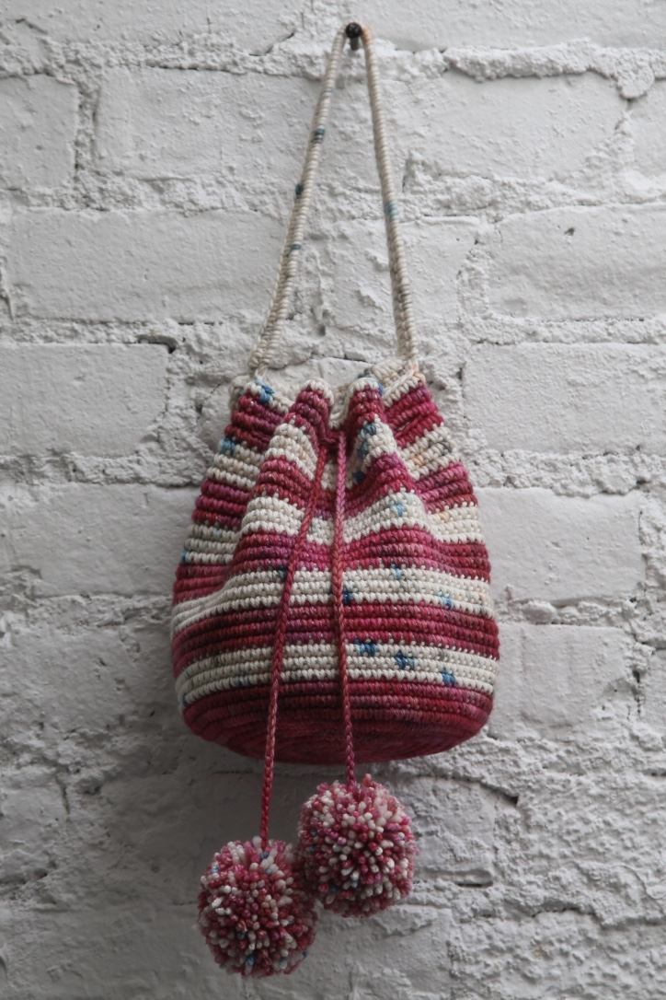

Quality craftsmanship, ethically sourced.
OLIVER HAND is a brand specializing in using crochet and basket weaving techniques to produce beautiful handmade accessories. Typically, a bag takes 1-2 days to make and only natural or recycled materials are used such as cotton, wool, linen, and wood.
 




